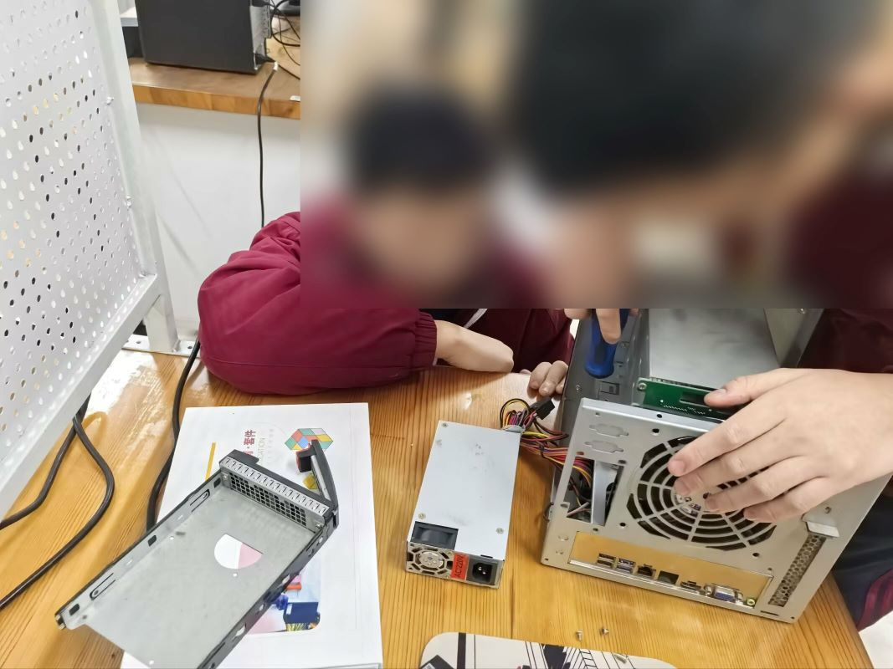
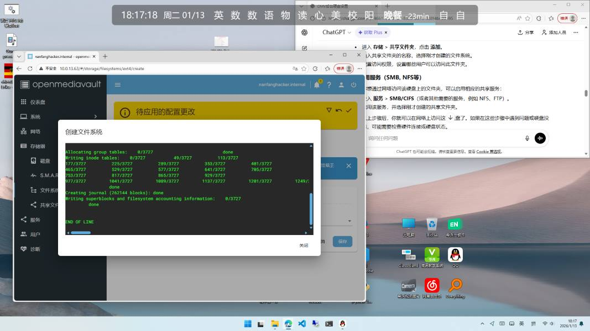
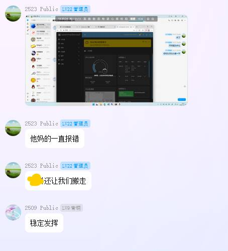
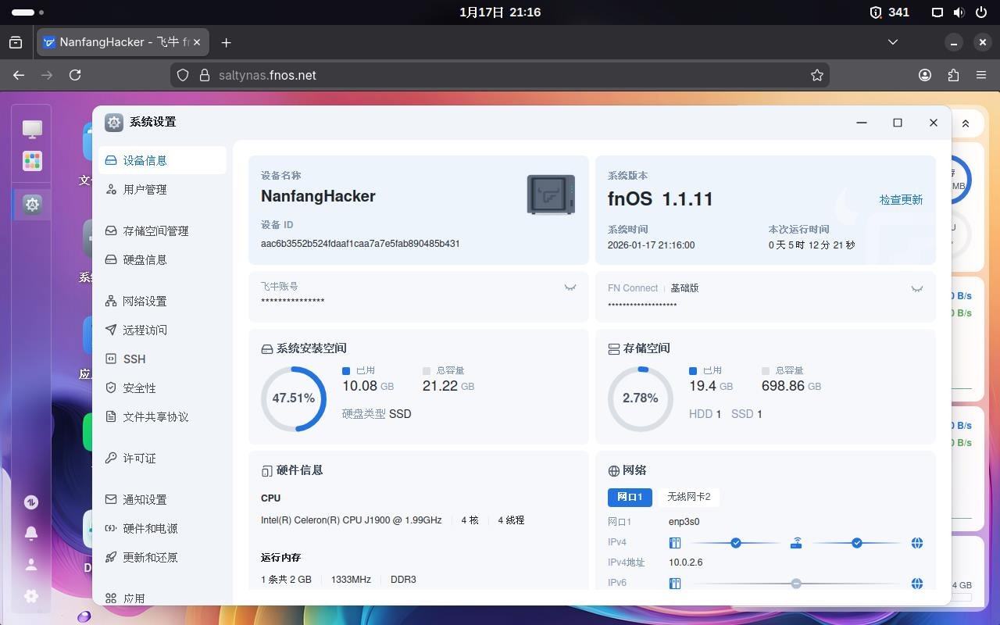
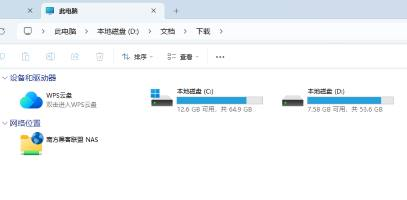
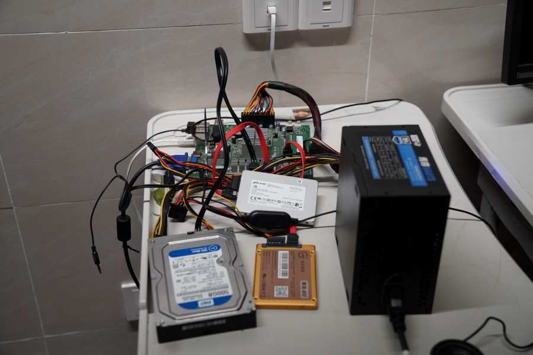
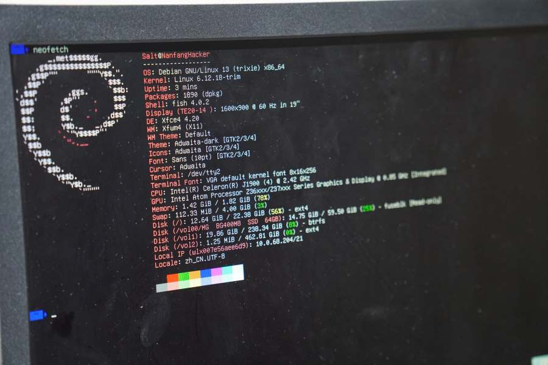
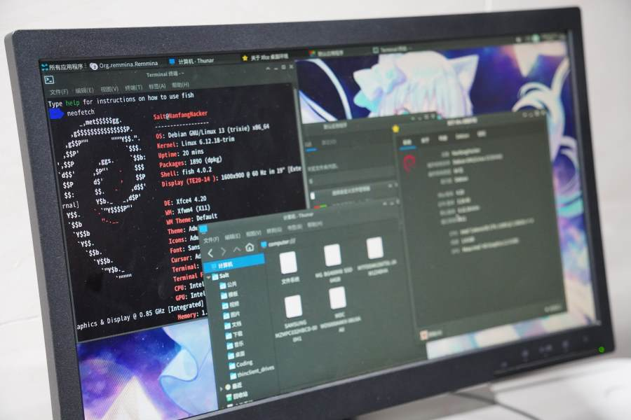

向以下人员表达感谢！
- 2班电教@把梦和生命线都打翻了
- 9班电教@AbCd
- 19班电教@小何同学
- 20班电教@KIY7086
- 23班电教@xxt8582753
- 23班副班长@Kingstar
- 24班嘉豪@Cookie
“xxt，你知道吗，S老师那里有好多配件！”Cookie一下课就兴冲冲地奔向我的教室，找到了我。
如果你曾经看过我的其他文章，就知道我们热衷于使用rdp来入侵其他班级的电脑为我们的项目提供算力。Cookie一直想专门搞台机子玩rdp，我也想找一台永远不会关机的电脑当git服务器，有东西给我们白嫖为什么不去？
作为一名有着多年装机经验的图吧垃圾佬，出于职业素养我立即和他一同前往科技楼。
科技楼的一教室内十分热闹，有的人在利用现有配件制作科创作品，有的人在3D建模，还有人在埋头写JavaScript，一旁的两台3D打印机轰鸣着，似乎在欢迎我们的到来。我们找到S老师说明了来意，他扛来一台主机，我们用螺丝刀拧开，我一眼就看出这是华硕的B85 itx小板，我对这一时代的机子最熟悉了，什么h61，B85，都是我玩剩下的。继续拆开认证了我的猜测，里面卡着一个4代CPU。
但是我并没有看上它的性能。这种电脑基本上没有使用价值，装WPS我都嫌卡。这时，S老师搬来一个小主机，我一直对这种小东西很感兴趣，迫不及待的拆开，居然是J1900主机！我决定就用它了。
Cookie访问了Intel官网，不明白我为什么要搞一台性能比那台 B85 差得远的电脑，但其实这自有我的原因。首先，我一直想弄台 J1900 小主机，只是囊中羞涩，现在终于有机会好好玩一玩；其次它的 TDP 只有 10W，用来做服务器功耗极低，二十四小时开着从教室拉线出来电费也不会太离谱，不太容易被老师注意到。最重要的是体积小，比 ITX 小得多，放课桌里都没问题。
S老师说这是他以前专门跑 BT 的下载机。通电一看，里面的 Win7 系统装着 μTorrent、IDM、百度网盘之类软件。可惜现在谁还玩BT，我上次用电驴大抵也是拿 MSDN 下镜像。
说了这么多，我来简单介绍一下当前配置：
- CPU：Intel J1900
- 内存：2GB DDR3
- 显卡：集成显卡
- 硬盘：32GB 板载固态
- 电源：自带 200W（坏），临时用另一个 300W 拆机电源顶着
事实上我高估了 J1900 的性能。我借来 AbCd 的 U 盘进入 Manjaro LiveCD，J1900 在 KDE6 前显得相当弱鸡，2GB 内存完全不够，打开 Firefox 直接卡死。
那大抵是不能当家用电脑使了。我看着空荡荡的硬盘槽和几个空闲的 SATA 接口，陷入了沉思。
“什么，你要组 NAS？”
“对，用来放一些文件。” 我放弃了建 git 服务器的想法，跑 GitLab 对这台机器太折磨。但装黑群晖或 OMV（OpenMediaVault）估计完全可以。我们班级的一体机只有 128GB 磁盘，主要装系统和教学软件，老师把 PPT 都放上去后分区很快就满了。我想搭建一个数据中心来存放大的静态文件。
Cookie 让同学做了个调查问卷，不到半天就问了十多名老师，很多老师抱怨文件没地方放。确实，不仅我们用的东西烂，学校给老师配的电脑也是纯乐子，不是奔腾就是赛扬，硬盘也小的可怜。我已经帮好几位老师清过 C 盘了。所以这是个很有意义的项目。
Kingstar 听到后想搞个商业模式，考虑上传下载收费什么的——这些事另当别论，先验证组 NAS 的可行性最重要。
我把我能搞到的盘都带过来了，第二天我带了一个大袋子，现在我们有了32GB 板载固态 + 256GB SATA 固态 + 500GB SATA 机械 + 64GB SATA 固态
我下载了 OpenMediaVault 镜像，用一个像 Rufus 的工具写入 U 盘，然后直接安装。没玩过debian，我就自己瞎操作，因为暂时没联网，我手动配置DHCP，IP地址，网关，dns什么的我都一顿瞎填，终于，进。。。诶，我桌面呢？
卧槽，我没桌面活不下去啊！
没有桌面就不方便，于是我们找有以太网的地方临时安装。把主机搬到老师办公室，顺便搬来一台显示器。第九节课没人时插上网线重装 OMV：UEFI 进入安装界面一路下一步，终于找到熟悉的 enp3s0，自动 DHCP 把我爽到了，安装完成。
登录后出于习惯我先输了一下 pacman，半天才反应过来这 TM 是 Debian，于是顺便学了些 Debian 的基本命令，可以说为了一碟醋包了一整盘饺子。
老师办公室不能长期放设备，我们把机器搬到 Cookie 的教室。同学们很好奇，但我们不想让太多人知道。小主板好处显现：主板和电源能放进课桌里，网线和电源线伸出来接到配电箱旁边的插座，就能长期运行。
用班级一体机输入 IP 地址成功进入 OMV 后台。OMV 管理界面比较简陋，为了更多操作我们在一体机上用 SSH 登录（显示器太大不方便）。如果以太网不稳定，可以接 Wi‑Fi：先用 ip addr 找设备，然后用系统自带的 nano 编辑 /etc/network/interfaces，添加 WPA 配置（SSID 和 password），再用 systemctl 重启网络服务即可。
接着就是操蛋的配置存储池和共享文件夹，反正我踩了很多坑
最终，我们不得不放弃OMV
20班电教和19班电教推荐我们装基于Debian的飞牛系统，我们试了一下，确实比omv方便的多，无论是系统安装界面还是网页管理后台都比omv友好。并且各种奇奇怪怪的问题也解决了。
但是有一个问题。创建存储空间时一直提示硬盘被挂载，导致无法正常格式化等操作。我在网上搜索很久也未找到解决方案。最后，我决定进Windows pe（因为我不会用Linux的磁盘工具）使用DiskGenius将硬盘格式化为Ext4，然而重启后问题依旧。
等等。。被挂载？
umount行吗？不行。
那就不要让它挂载！
我再次进入DiskGenius，直接删除那几块磁盘的分区，直接保存更改而不格式化，让那些磁盘变灰，就像新盘一样。
重启后，飞牛果然读出来了。现在事情就好办多了。给同学和老师们创建好账号，设置FTP，smb共享，Windows文件资源管理器直接加入我们的网络地址就能访问，相当舒服。
但是又有一个问题：我们的主机放在24班，他们班上总有些畜牲喜欢故意乱拉闸，cookie对此没少发过火。L老师支持我们的工作，他为我们找到一间空闲的办公室，让我们把机子放在里面。
那个办公室空间很大，空无一物，只是堆了一些桌子；它的地理位置不是很偏僻，但长期闲置而几乎无人打扰，也许是藏尸的最佳之地；它的条件也很好，插座网口全部齐全，进门就有两扇视野开阔的落地窗，还安装了空调。我们把主板等物品搬到办公室内，通上电源，闲置的办公室变成了一个数据中心。办公室内还有一块白板，cookie在那块白板上写了一些关于nas的科普常识，也简要介绍了我们的技术团队。现在，我们再也不用担心拉闸了。
但我们还不贪心，来这个办公室只能玩黑框框，这里键鼠齐全，在这里写程序会多爽呢？
然后，cookie把我那64gb的盘格了NTFS，装了个Win8.1。。。。
其实问题也不大，但不够优雅。
不是Windows用不起，而是Linux更有性价比。对于这种比我手机性能还差的电脑来说，要装桌面环境，KDE GNOME之类肯定要先被排除。那就xfce吧。xfce的安装十分简单，apt install xfce4，如果有依赖问题就aptitude，它会自动处理依赖关系并给出解决方案。然后就是startx。看似简单的操作，对于不太熟悉Linux的我来说比登天还难，跟着网上的教程搞了半天才弄好。另外我们还可以安装xrdp，这样就可以在班级电脑上远控它而不用频繁进出办公室，当然如果你喜欢vnc。。。不理解，但尊重。
Firefox，vlc什么的我都装好啦，其实一开始就该用manjaro之类的发行版，我还是挺喜欢KDE全家桶的，毕竟xfce自带的Thunar手感不太好，我还是装了Dolphin。现在真变成家用电脑了，我甚至还专门焊了个3W的小喇叭在上面，音质也就听个响，而且共振非常严重，音量一开大点鼓点音就噔噔噔噔敲着桌子响，但总之问题不大。
2026年寒冬 一日下午。
我和kingstar进入办公室，像往常一样反锁好门。我安装了Remmina，RDP爱好者发力了，他通过远程桌面玩游戏。这时，有人在敲门。
我十分警觉，让kingstar关掉了声音。我走到门前。“谁啊？”
“我，AbCd！”
“ようこそ！”我打开门，abcd带着2班电教进入房间。
然后，我们就在这间办公室内度过了一个快乐的下午，我们可以在这个无人打扰的地方交流学术问题，在这个与世隔绝的地方毫无顾虑地掏出手机调试设备，也可以远程到有开发环境的电脑继续PySide6开发。也不知过了多久，我才想起timedatectl看看现在几点了，卧槽，要上课了，我们晚饭都没吃。
后续几天都是这样，曾经的Data Center变成了Fashion Center，谁还记得我们是来组NAS的，这就是个网吧好吧。我们也充分利用这里的空间，让一个普通的办公室同时具有了餐厅、KTV等场所的功能，娱乐和学习设施一应俱全，就差摆一台乌蒙or吴丽芳。
可是，这种日子终究是不能长远的。我们频繁进出一个没人的办公室肯定会引起怀疑。一天中午，我想去“网吧”查资料（因为班上电脑一直被监控着不敢用）我刚准备推开门，发现班主任就在旁边。
卧槽，中午为什么会有人啊！吓死我了！
“你来这里干什么？”
“我。。。东西落在这里了。”
他不放心，跟我一起进办公室，我也实在没什么东西好拿的，就把插着的U盘拿走。
这时，他注意到了那台机箱都没有的电脑，问我怎么回事。
我支支吾吾，一时不知如何回答。
他又看到那块黑板，上面写的专业术语和Linux命令他大抵也看不懂。
“这些是奥赛集训队的吗？”
“啊对对对，应该是”
“不要去动那些东西，赶紧回去午休！”
我松了口气，确保人走后在终端里留了一句话让他们小心，赶紧离开了办公室。
那天下午，我们又打算去“网吧”了，结果发现，门他妈的被锁了！
还好我有先见之明，在事发前一天把所有窗户上的锁都打开了，因此理论上来说可以翻窗进入。
我们正准备翻窗，班主任又出现了。
这下真解释不清了，然后Kingstar头也不回地冲向厕所。
那还说啥兄弟们，冲刺 冲刺！冲！冲！♿
所幸Cookie找到了L老师，重新打开507，网吧重新开业。
与此同时，技术部门也没闲着，公网映射什么的都安排上了，这也意味着我们可以远程SSH管理NAS，无论在天涯海角，只要有一部装了Termux的手机，就能轻松连接。
（未完待续）